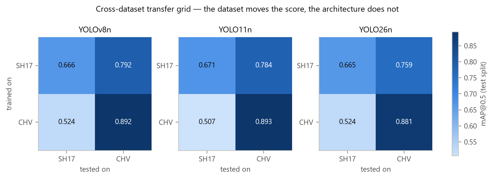
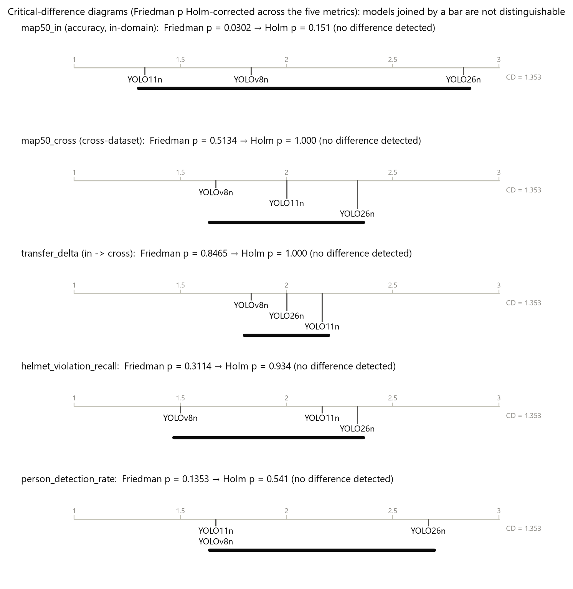

● MSc dissertation · open source · v1.0.0
The detector didn't decide it. The dataset did.
Three YOLO generations, 18 training runs, two datasets and a zone monitor that turns detections into alerts. Every number on this page comes from a file in the repo.
Saved replay of a real run
Watch the monitor work.
Alert log
- No alert yet. A worker has to stay in breach for the full dwell time first.
Same clip, alerts fired
Results · test splits · mean of 3 seeds
The score moved with the data, not the model.
| Trained on | Tested on | YOLOv8n | YOLO11n | YOLO26n |
|---|---|---|---|---|
| CHV | CHV (in-domain) | 0.892 [0.882, 0.898] | 0.893 [0.887, 0.899] | 0.881 [0.876, 0.884] |
| CHV | SH17 (cross) | 0.524 [0.511, 0.532] | 0.507 [0.490, 0.520] | 0.524 [0.516, 0.530] |
| SH17 | SH17 (in-domain) | 0.666 [0.662, 0.669] | 0.671 [0.663, 0.677] | 0.665 [0.660, 0.669] |
| SH17 | CHV (cross) | 0.792 [0.786, 0.795] | 0.784 [0.769, 0.792] | 0.759 [0.741, 0.770] |
mAP50 with a 95 % BCa bootstrap interval over 3 seeds. Nano models only. Tests: exact paired sign-flip, Friedman and Nemenyi, with Holm correction across the five metrics.


Finding the person is the bottleneck.
Zero-shot on Pictor-PPE (774 images, 2,497 workers), helmet recall was 0.69 to 0.73 for SH17-trained models and 0.46 to 0.55 for CHV-trained ones. Only 59 to 73 % of workers were detected at all, and an undetected worker counts as a missed violation.
Speed on a laptop.
Batch 1, 640 px, end to end on an RTX 4070 Laptop: YOLOv8n 10.6 ms (94 fps), YOLO11n 12.6 ms (79 fps), YOLO26n 13.7 ms (73 fps). A proxy for deployment cost, not an edge-device measurement. After an offline pre-resize, epoch time fell from 244.8 s to 45.0 s.
How it works
Two pipelines, one rulebook.
The benchmark
Harmonise
SH17 and CHV mapped to three classes (person, helmet, vest). Cross-dataset near-duplicates are excluded so transfer scores are not inflated.
Freeze
Six split lists with an ID each, checked by a test on every run. A config is never edited after its run starts.
Train and score
18 runs, then scored on test splits no run ever read.
Test the claim
Seeds aggregated with intervals, then paired and omnibus tests with Holm correction.
The monitor
Detect and track
A YOLO detector and ByteTrack give each worker a stable ID across frames.
Associate
A containment rule (threshold 0.80) links each person to the helmet and vest they wear.
Check the zone
A person counts as inside if their feet are inside the drawn polygon.
Wait, then alert
One alert fires only after 3 s of continuous breach, with a 1 s memory so a briefly hidden helmet does not flip a worker.
Pictor-PPE is evaluation-only. The code makes a training config that touches it fail before the first batch.
Limits
What this study does not show.
Nano models only, and three seeds. Within one training dataset, an exact paired sign-flip on three seeds cannot return a p-value below 0.25, so a null result means underpowered, not equivalent.
Latency was measured on one laptop, and the CPU figures are one run per model.
The replay above is the monitor's own output on a stock clip with no ground-truth labels. An alert there is not a verified violation, and no alert-accuracy result is published yet.
Trained weights are not distributed and the datasets keep their own terms (SH17 is CC BY-NC-SA 4.0), so reproducing a number needs the data and a trained run. Re-scoring weights is deterministic; retraining is not bit for bit.
Run it
Clone it. Check it.
The 201 tests run on any machine with no GPU, datasets or weights. Training needs an NVIDIA GPU with 8 GB.